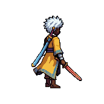
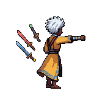
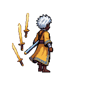
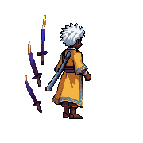

New 8-frame east-facing attacks. Existing gameplay and idle poses are unchanged.
Four Sword Swipe

Fist Blade Punch

Entropy forward swords · original versionEntropy giant sword · new review preview Swords merge, but blade points backward rather than launching forward.

Entropy · red, green and blue ethereal sword New color-and-energy review preview; gameplay unchanged.

Entropy · forward attack revision Clear rightward strike and impact; RGB colors missing in this attempt. Gameplay unchanged.